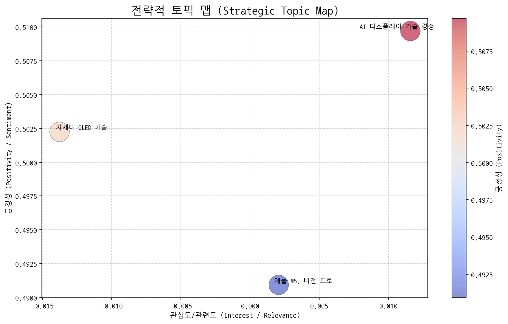
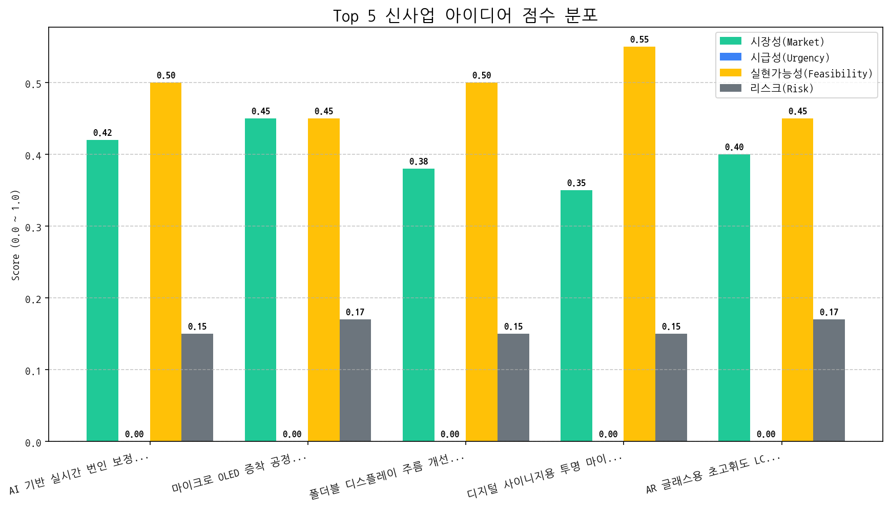

 | 토픽명 | 요약 | 핵심 키워드 | |:---------------|:-----------------------------------------------------------------------------------------------|:--------------| | AI 디스플레이 기술 경쟁 | 미국을 중심으로 AI, 반도체 기술이 융합된 차세대 LED/OLED 디스플레이 기술 개발 및 시장 판매 경쟁 심화 관련 뉴스. | ai, 디스플레이, 기술 | | 애플 M5, 비전 프로 | 애플의 M5 칩, 비전 프로 출시 및 AI 기술 관련 맥북 신제품 출시 가능성에 대한 뉴스입니다. 터치 기능 관련 내용도 포함될 수 있습니다. | 프로, 맥북, 애플 | | 차세대 OLED 기술 | 2세대, 4세대 OLED 기술과 VR, 3A 게임에 적합한 올레드, RGB 마이크로 OLED, 프레임, OLED O1 등 차세대 OLED 디스플레이 기술 트렌드를 다룸. | 2o, 4o, vr |
 | 아이디어 | 가치 제안 | 총점 | |:-------------------------------------------------|:---------------------------------------------------------------------------------------------------------|-----:| | AI 기반 실시간 번인 보정 OLED 패널 | AI 기반 실시간 번인 분석 및 보정 알고리즘을 통해 OLED 패널 수명 30% 연장 및 균일한 화질 유지. 경쟁사 대비 월등한 내구성을 보장하여 차량용 디스플레이 시장 점유율 확대. | 2.6 | | 마이크로 OLED 증착 공정용 AI 기반 실시간 품질 관리 시스템 | AI 기반 실시간 분석으로 증착 공정 불량률 50% 감소 및 생산 비용 20% 절감. 데이터 기반의 공정 최적화를 통해 마이크로 OLED 패널의 품질 경쟁력 강화. | 2.5 | | 폴더블 디스플레이 주름 개선을 위한 능동형 장력 제어 기술 | 능동형 장력 제어 기술을 통해 폴더블 디스플레이 주름 발생 80% 감소 및 내구성 50% 향상. 경쟁사 대비 월등한 폴딩 경험을 제공하여 폴더블폰 시장 경쟁력 강화. | 2.4 | | 디지털 사이니지용 투명 마이크로 LED 디스플레이 | 90% 이상의 투명도를 유지하면서도 높은 밝기와 명암비를 제공하여 시각적 효과 극대화. 모듈형 디자인으로 다양한 크기와 형태로 설치 가능하며, 에너지 효율적인 마이크로 LED 기술 적용. | 2.4 | | AR 글래스용 초고휘도 LCoS (Liquid Crystal on Silicon) 패널 | 기존 LCoS 패널 대비 3배 높은 휘도를 제공하여 야외 시인성 확보. 고해상도 및 저전력 특성을 통해 AR 글래스의 휴대성 및 사용 시간 극대화. | 2.3 |
| Hypothesis | Target | KPI | Owner | Due |
|---|---|---|---|---|
| 글로벌 완성차 OEM은 현재 OLED 번인 문제 해결에 대한 니즈가 있으며, 당사의 AI 기반 실시간 번인 보정 기술에 대해 높은 관심을 보일 것이다. | 글로벌 완성차 OEM (Tier 1 포함)의 디스플레이 구매/기술 담당자 5명 인터뷰 | 인터뷰 대상 5명 중 3명 이상이 당사 기술에 대한 PoC (Proof of Concept) 진행 의사 표명 | 사업개발팀 | 2025-11-01 |
| 당사의 AI 기반 실시간 번인 보정 알고리즘은 현재 기술 수준으로 OLED 패널의 번인 현상을 20% 이상 효과적으로 감소시킬 수 있다. | 자체 개발한 AI 알고리즘을 실제 OLED 패널에 적용하여 번인 테스트 진행 및 결과 분석 | 번인 테스트 결과, AI 알고리즘 적용 시 번인 발생 속도가 미적용 시 대비 20% 이상 감소 | 기술기획팀 | 2025-11-01 |
| 클라우드 기반 데이터 분석 및 알고리즘 업데이트 기능은 완성차 OEM에게 실시간 번인 보정 성능 향상 및 유지보수 편의성을 제공하여 높은 가치를 인정받을 것이다. | 완성차 OEM 대상 기술 데모 진행 및 피드백 수집 | 기술 데모 참여 OEM 3곳 중 2곳 이상이 클라우드 기반 업데이트 기능에 대한 긍정적 평가 (기능의 필요성, 보안성, 사용 편의성) | 제품개발팀 | 2025-11-01 |